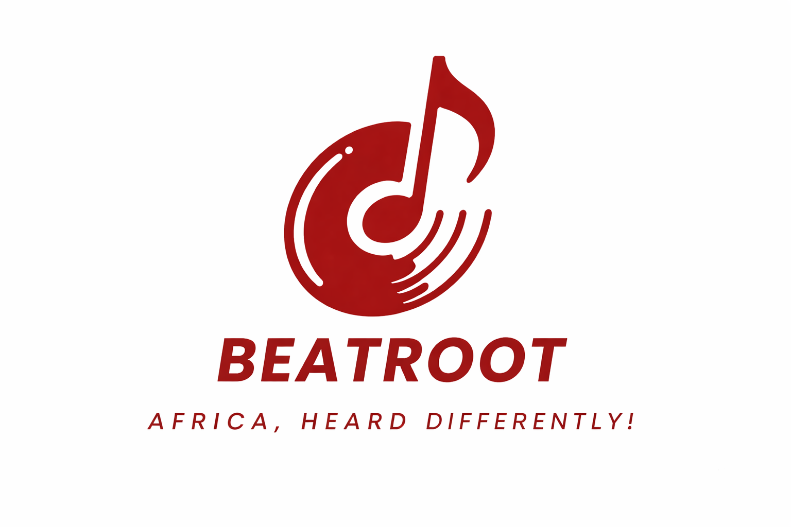
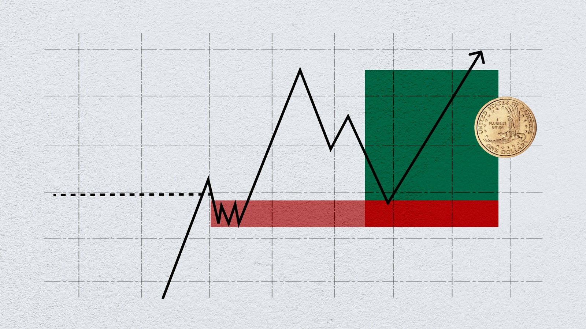

Currently Ongoing Projects ▶
Bloom
Founder – Pregnancy care and support platform
Bloom is a care-focused platform supporting expecting mothers through pregnancy. Designed for moments of vulnerability and change, the platform blends reassurance, guidance, and emotional presence into a calm, supportive care experience.

Beatroot
Founder – Africa’s first audio-first streaming ecosystem
Beatroot is an audio-first platform celebrating the roots of African sound while amplifying the next generation of creators. Designed for Africa and its diaspora, the platform blends music, original audio, and discovery into a seamless, culturally grounded listening experience.
Project Apnapan
Designing and articulating a human-centered company narrative focused on belonging, trust, and emotional safety, using qualitative insights to define values, mission, and social impact across communities and institutions at meaningful scale.

Accessible Security: Interfaces for Security Protocol Verification
Undergraduate Computer Science Thesis, Ashoka University, 2025
A user-friendly research prototype advancing accessibility and interpretability of security protocol verification through human-centered interface design and visual feedback. Abstract
Completed Projects ▶
Please note that previous projects are still being updated!
Artificial Intelligence – Text Analysis
Analysing multilingual text using machine learning and natural language processing techniques to extract linguistic patterns, semantic structure, and cross-lingual representations under high- and low-resource settings, with a focus on English–French and English–Shona data. Report
Agentic AI for Predictive Analytics
Designing an agentic AI system for churn prediction and retention optimisation, combining predictive modelling, multi-agent decision coordination, reinforcement learning, and guardrails for safety, compliance, and budget-aware action. Report
Customer Segmentation with Machine Learning
Developed a Python-based customer segmentation model using ensemble methods like Random Forest and XGBoost to identify high-value clusters. Optimized models for different segment patterns, retained key features for accuracy, and applied regular tuning to prevent overfitting. Report

Optimizing Markets Using Data Insights
Used Python to analyze marketing metrics and optimize campaigns. Found that budget explains 94 percent of engagement while CTR does not predict sales, emphasizing engagement over clicks. Verified low correlations below 0.3 and no multicollinearity with a VIF of 1.001 to ensure unbiased insights. Report
Customer Insights Using Power BI
Cleaned and prepared customer and sales data for analysis in Power BI. Detected missing values in Age and applied mean imputation to retain customer distribution. Standardized null payment methods as Unknown for accurate channel analysis. Corrected inconsistent city and region casing using Power Query to enable precise regional sales aggregation. Report
Building Trustworthy Software
A Dafny-driven approach to formal verification of approved user interactions, enhancing software reliability, user trust, and correctness in critical systems through rigorous specification and verified algorithms. Report